烽火宝物图片索引
183 张原图裁剪。输入名称、类别或品质筛选；原始尺寸与来源见 manifest.json。
战象主动宝物 · 传说80 × 80
小熊猫主动宝物 · 稀有80 × 80
斑纹虎主动宝物 · 稀有80 × 80
驴主动宝物 · 稀有80 × 80
天狼主动宝物 · 稀有80 × 80
天狗主动宝物 · 稀有80 × 80
青牛主动宝物 · 稀有80 × 80
角木蛟主动宝物 · 稀有80 × 80
奎木狼主动宝物 · 稀有80 × 80
危月燕主动宝物 · 稀有80 × 80
斗木獬主动宝物 · 稀有80 × 80
九尾狐主动宝物 · 普通80 × 80
玉兔主动宝物 · 普通80 × 80
独角兽主动宝物 · 普通80 × 80
凤凰主动宝物 · 普通80 × 80
卧龙主动宝物 · 普通80 × 80
麒麟主动宝物 · 普通80 × 80
鹿主动宝物 · 普通80 × 80
亢金龙主动宝物 · 普通80 × 80
翼火蛇主动宝物 · 普通80 × 80
星日马主动宝物 · 普通80 × 80
参水猿主动宝物 · 普通80 × 80
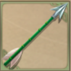
名将终结箭稀有被动宝物 · 普通120 × 120
朱雀羽扇稀有被动宝物 · 稀有120 × 120
祝融令稀有被动宝物 · 稀有120 × 120
周瑜的头盔稀有被动宝物 · 稀有120 × 120
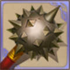
铁蒺藜骨朵稀有被动宝物 · 稀有120 × 120
华佗的药箱稀有被动宝物 · 稀有120 × 120
邢道荣的大斧稀有被动宝物 · 稀有120 × 120
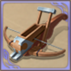
诸葛连弩稀有被动宝物 · 稀有120 × 120
孔明灯稀有被动宝物 · 稀有120 × 120
草船稀有被动宝物 · 稀有120 × 120
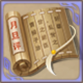
许劭的名单稀有被动宝物 · 稀有120 × 120
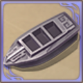
曹冲的石头船稀有被动宝物 · 稀有120 × 120
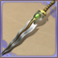
青蛇剑稀有被动宝物 · 稀有120 × 120
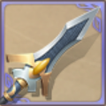
涯角枪稀有被动宝物 · 稀有120 × 120
神周瑜的琴稀有被动宝物 · 稀有120 × 120
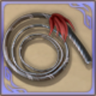
张飞的鞭子稀有被动宝物 · 稀有120 × 120
花鬘的骨刀稀有被动宝物 · 稀有120 × 120
张绣的披风稀有被动宝物 · 稀有120 × 120
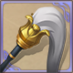
拂尘稀有被动宝物 · 稀有120 × 120
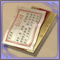
张恭的信稀有被动宝物 · 稀有120 × 120
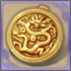
长坂坡勋章稀有被动宝物 · 稀有120 × 120
三娘的玫刃剑稀有被动宝物 · 稀有120 × 120
蝴蝶翼稀有被动宝物 · 稀有120 × 120
追猎锤稀有被动宝物 · 稀有120 × 120
阿斗的襁褓稀有被动宝物 · 稀有120 × 120
孟德新书稀有被动宝物 · 稀有120 × 120
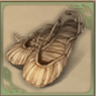
刘备的草鞋稀有被动宝物 · 普通120 × 120
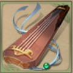
焦尾琴稀有被动宝物 · 普通120 × 120
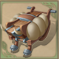
木牛流马稀有被动宝物 · 普通120 × 120
史记稀有被动宝物 · 普通120 × 120
周妃的箜篌稀有被动宝物 · 普通120 × 120
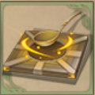
吕凯的司南稀有被动宝物 · 普通120 × 120
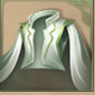
吕蒙的白衣稀有被动宝物 · 普通120 × 120
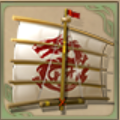
卫温诸葛直的帆稀有被动宝物 · 普通120 × 120
公孙渊的珠宝稀有被动宝物 · 普通120 × 120
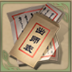
出师表稀有被动宝物 · 普通120 × 120
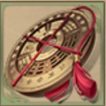
罗盘稀有被动宝物 · 普通120 × 120
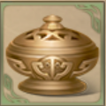
荀彧的香炉稀有被动宝物 · 普通120 × 120
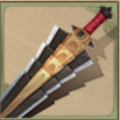
何进的屠刀稀有被动宝物 · 普通120 × 120
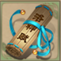
洛神赋稀有被动宝物 · 普通120 × 120
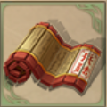
孟获的兵法书稀有被动宝物 · 普通120 × 120
周泰的纱布稀有被动宝物 · 普通120 × 120
卑弥呼的面具稀有被动宝物 · 普通120 × 120
镔铁大砍刀稀有被动宝物 · 普通120 × 120
龙印稀有被动宝物 · 普通120 × 120
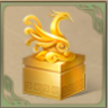
凤印稀有被动宝物 · 普通120 × 120
曹操的须袍稀有被动宝物 · 普通120 × 120
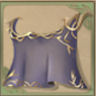
月英的面纱稀有被动宝物 · 普通120 × 120
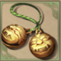
甘宁的铃铛稀有被动宝物 · 普通120 × 120
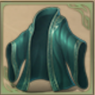
孙皓的浴袍稀有被动宝物 · 普通120 × 120
关索的玫瑰花稀有被动宝物 · 普通120 × 120
甄姬的蝴蝶结稀有被动宝物 · 普通120 × 120
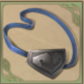
夏侯惇的眼罩稀有被动宝物 · 普通120 × 120
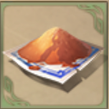
文远牌止啼散稀有被动宝物 · 普通120 × 120
雷铜的大盾稀有被动宝物 · 普通120 × 120
吴兰的长矛稀有被动宝物 · 普通120 × 120
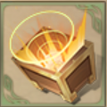
留赞的扩音器稀有被动宝物 · 普通120 × 120
许贡的护额稀有被动宝物 · 普通120 × 120
陆逊的火把稀有被动宝物 · 普通120 × 120
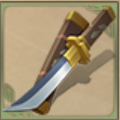
范疆张达的刀稀有被动宝物 · 普通120 × 120
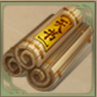
张角的天书稀有被动宝物 · 普通120 × 120
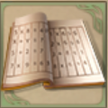
张妈的作业本稀有被动宝物 · 普通120 × 120
兀突骨的藤甲稀有被动宝物 · 普通120 × 120
忙牙长的帽子稀有被动宝物 · 普通120 × 120
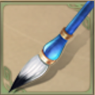
陈琳的笔稀有被动宝物 · 普通120 × 120
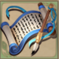
钟繇的字帖稀有被动宝物 · 普通120 × 120
刘禅的诏令稀有被动宝物 · 普通120 × 120
刘辩的冕旒稀有被动宝物 · 普通120 × 120
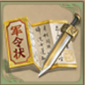
军令状稀有被动宝物 · 普通120 × 120
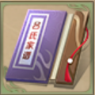
吕布的族谱稀有被动宝物 · 普通120 × 120
 吕布的族谱稀有被动宝物 · 普通120 × 120
吕布的族谱稀有被动宝物 · 普通120 × 120
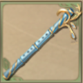
蔡文姬的长笛稀有被动宝物 · 普通120 × 120
八卦阵稀有被动宝物 · 普通120 × 120
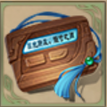
许攸的传呼机稀有被动宝物 · 普通120 × 120
蒲元的锻锤稀有被动宝物 · 普通120 × 120
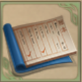
糜竺的账本稀有被动宝物 · 普通120 × 120
马铠稀有被动宝物 · 普通120 × 120
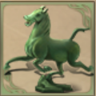
马踏飞燕稀有被动宝物 · 普通120 × 120
马鞍稀有被动宝物 · 普通120 × 120
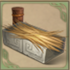
槽枥稀有被动宝物 · 普通120 × 120
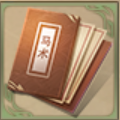
马术宝典稀有被动宝物 · 普通120 × 120
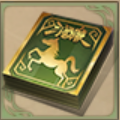
坐骑卡包稀有被动宝物 · 普通120 × 120
雄骑手册稀有被动宝物 · 普通120 × 120
胡车儿的面罩稀有被动宝物 · 普通120 × 120
三国演义被动宝物 · 传说82 × 82
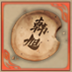
大饼被动宝物 · 传说82 × 82
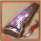
空城绝唱被动宝物 · 传说82 × 82
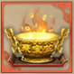
聚宝盆被动宝物 · 传说82 × 82
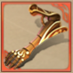
蒲元的机械手臂被动宝物 · 传说82 × 82
七星灯被动宝物 · 传说82 × 82
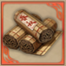
吕氏春秋被动宝物 · 传说82 × 82
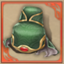
关羽的绿帽子被动宝物 · 传说82 × 82
张琪瑛的法箓被动宝物 · 传说82 × 82
张鲁的布道幡被动宝物 · 传说82 × 82
凶镬被动宝物 · 传说82 × 82
凤鸣冠被动宝物 · 传说82 × 82
朱雀羽扇被动宝物 · 稀有82 × 82
祝融令被动宝物 · 稀有82 × 82
周瑜的头盔被动宝物 · 稀有82 × 82
铁蒺藜骨朵被动宝物 · 稀有82 × 82
华佗的药箱被动宝物 · 稀有82 × 82
邢道荣的大斧被动宝物 · 稀有82 × 82
诸葛连弩被动宝物 · 稀有82 × 82
孔明灯被动宝物 · 稀有82 × 82
草船被动宝物 · 稀有82 × 82
许劭的名单被动宝物 · 稀有82 × 82
曹冲的石头船被动宝物 · 稀有82 × 82
青蛇剑被动宝物 · 稀有82 × 82
涯角枪被动宝物 · 稀有82 × 82
神周瑜的琴被动宝物 · 稀有82 × 82
张飞的鞭子被动宝物 · 稀有82 × 82
花鬘的骨刀被动宝物 · 稀有82 × 82
张绣的披风被动宝物 · 稀有82 × 82
拂尘被动宝物 · 稀有82 × 82
张恭的信被动宝物 · 稀有82 × 82
长坂坡勋章被动宝物 · 稀有82 × 82
三娘的玫刃剑被动宝物 · 稀有82 × 82
蝴蝶翼被动宝物 · 稀有82 × 82
追猎锤被动宝物 · 稀有82 × 82
阿斗的襁褓被动宝物 · 稀有82 × 82
孟德新书被动宝物 · 稀有82 × 82
蜀中地图消耗品 · 传说122 × 122
天材地宝消耗品 · 稀有122 × 122
甘露消耗品 · 稀有122 × 122
精炼九鼎丹消耗品 · 稀有122 × 122
精炼太清丹消耗品 · 稀有122 × 122
精炼玉液丹消耗品 · 稀有122 × 122
精制寒食散消耗品 · 稀有122 × 122
精制五石散消耗品 · 稀有122 × 122
李肃的金珠消耗品 · 稀有122 × 122
完工的栈道消耗品 · 稀有122 × 122
天师符消耗品 · 稀有122 × 122
商人符消耗品 · 稀有122 × 122
铁匠符消耗品 · 稀有122 × 122
隆中对消耗品 · 稀有122 × 122
虎符消耗品 · 稀有122 × 122
玉玺消耗品 · 稀有122 × 122
孙策的红巾消耗品 · 稀有122 × 122
邓艾的红心消耗品 · 稀有122 × 122
樊玉凤的酒杯消耗品 · 稀有122 × 122
刘琦的梯子消耗品 · 稀有122 × 122
华容道消耗品 · 稀有122 × 122
征召令消耗品 · 稀有122 × 122
普通药材消耗品 · 普通122 × 122
麻沸散消耗品 · 普通122 × 122
九鼎丹消耗品 · 普通122 × 122
太清丹消耗品 · 普通122 × 122
玉液丹消耗品 · 普通122 × 122
寒食散消耗品 · 普通122 × 122
五石散消耗品 · 普通122 × 122
郭嘉的止咳药消耗品 · 普通122 × 122
建设的栈道消耗品 · 普通122 × 122
管辂的罗盘消耗品 · 普通122 × 122
对敌计策消耗品 · 普通122 × 122
青梅酒消耗品 · 普通122 × 122
龙版三国杀消耗品 · 普通122 × 122
军争卡包消耗品 · 普通122 × 122
高顺的面具消耗品 · 普通122 × 122
十二奇策消耗品 · 普通122 × 122
假书信消耗品 · 普通122 × 122
淳于琼的酒壶消耗品 · 普通122 × 122